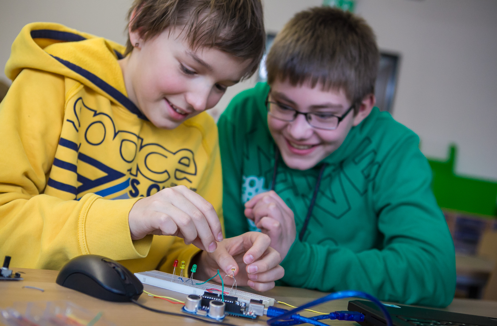
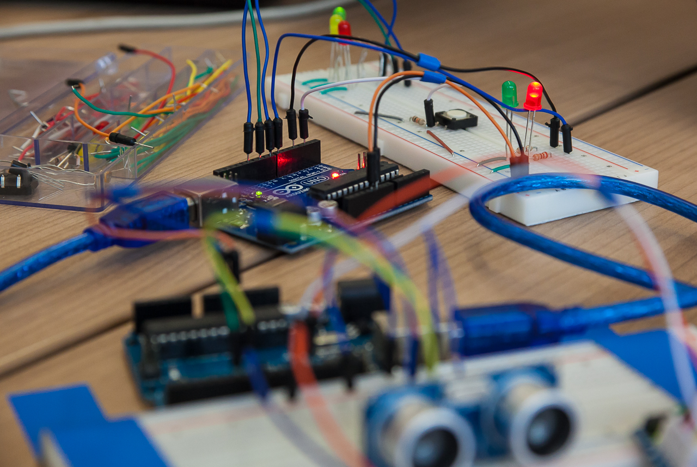

Nachwuchsförderung durch Do-it-yourself-Datenerhebung
Die Kiste mit Sinn
sensebox.de
Mehr Schüler mit anschaulichen Beispielen und Experimenten für Technik und die Naturwissenschaften zu begeistern, das ist ein ehrgeiziges Ziel. Der Forscherdrang von Schülern sollte nachhaltig gestärkt und gefördert werden, das sieht auch das deutsche Bildungsministerium so. Aber Exkursionen, Projekte und Experimente müssen von Lehrern besonders zeitintensiv vorbereitet werden, damit sie die Schüler begeistern und ihre Neugierde wecken. Das bedeutet für die Lehrer oft einen enormen zusätzlichen Aufwand. Gleichzeitig sieht sich die Wissenschaft – insbesondere die Umweltwissenschaften – mit einem steigenden Datenbedarf konfrontiert. Um Umweltphänomene besser erforschen zu können, müssen mehr Daten erhoben werden.
Das GI@School Lab des Instituts für Geoinformatik der Universität Münster möchte gleichzeitig den wissenschaftlichen Nachwuchs und die Generierung von Geodaten fördern. Deshalb stellt es Lehrern für ihren Unterricht ein umfangreiches Angebot zur Förderung von Kompetenzen im Bereich “digitale Geoinformation” bereit. Außerdem sollen Bürger ermutigt warden, Geodaten zu generieren und zu teilen, damit sie selbst die Möglichkeit haben, eigenen Forschungsfragen nachzugehen. Dazu hat das Institut die senseBox erfunden. Das ist eine Sensorstation, die vom Nutzer selbst gebaut wird und das Erheben von Umweltdaten und Geoinformationen ermöglicht. Es gibt zwei Versionen: die senseBox:home und die senseBox:edu.
 Erstere ist für die Nutzung zuhause gedacht, einfach aufzubauen und sofort einsatzbereit, um als lokale Messstationen kontinuierlich Daten zu Luftfeuchte, Luftdruck, Helligkeit, UV-Strahlung etc. zu generieren. Mit ihrer fertigen senseBox:home können Bürger so nicht nur Umweltdaten in ihrer Umgebung messen, sie können diese auch über die sogenannte openSenseMap als offene Daten in ein Portal einspeisen und die dort vorhandenen Daten wiederum für eigene Forschungsprojekte im Umweltbereich nutzen.
Die senseBox:edu wurde speziell für den Schulunterricht konzipiert, um anschaulich das Erlernen von Kompetenzen in den Bereichen Programmierung, Elektronik und Umweltdatengenerierung zu fördern. Im Gegensatz zur senseBox:home ist der Aufbau der senseBox:edu komplexer und Teil der Lernerfahrung. Auch hier können die generierten Daten in die openSenseMap eingespeist und die deutschlandweit generierten Daten für eigene Forschungsfragen genutzt werden. Die senseBox:edu basiert auf Arduino Mikrokontrollern und Sensoren und umfasst zusätzliches Zubehör und Unterrichtsmaterial. Auf diese Weise werden Lehrer aktiv darin unterstützt, ihren Schülern Programmierkompetenzen sowie Fähigkeiten zur Generierung und Nutzung von Geoinformationsdaten zu vermitteln.
 Die senseBox wurde nach den Prinzipien der Open Science entwickelt und so ist die Zusammenstellung der senseBox-Komponenten unter der offenen CERN Open Hardware Lizenz 1.2 frei zugänglich. Auch der Source Code der senseBox:home ist Open Source unter der LGPL 3.0 Lizenz verfügbar, der Source Code der openSenseMap unter der MIT Lizenz. Die dort generierten und veröffentlichten offenen Daten sind unter der Public Domain Dedication and License 1.0. Die Anleitungen sind Open Educational Resources (OER) unter der Creative Commons Lizenz CC BY SA 4.0.
Von der Entwicklung der senseBox profitiert eine ganze Reihe von Akteuren. Zunächst einmal profitieren von der senseBox:edu die Lehrer und Schüler. Erstere werden umfangreich bei der Ausgestaltung ihres Unterrichts unterstützt und können im Projektformat den Schülern eine besondere Lernerfahrung zum Anfassen bieten.
 Die senseBox:edu vermittelt den Schülern Kompetenzen, die in einer digitalisierten Gesellschaft zunehmend wichtiger
werden. Durch die
senseBox:edu bekommen sie einen einfachen, anschaulichen Einstieg in die Welt der Wissenschaft, Informatik und
Umweltphänomene. So können Schüler durch ihre eigenverantwortliche Arbeit an der senseBox für
wissenschaftlich-technische Fragestellungen begeistert werden. Davon profitiert langfristig auch die deutsche
Forschung, die neuen Nachwuchs erhält. Kurzfristig profitiert sie bereits von dem offenen Geodatennetz der
openSenseMap, die von allen Beteiligten für wissenschaftliche Zwecke genutzt werden kann. Auch von interessierten
Bürgern, die über die senseBox:home Daten einspeisen, wird die Forschung unterstützt und die Kampagne “Citizen
Science” des Bundesministeriums für Bildung und Forschung zur Förderung von Bürgerforschung, praktisch
ausgestaltet.
Die senseBox:edu vermittelt den Schülern Kompetenzen, die in einer digitalisierten Gesellschaft zunehmend wichtiger
werden. Durch die
senseBox:edu bekommen sie einen einfachen, anschaulichen Einstieg in die Welt der Wissenschaft, Informatik und
Umweltphänomene. So können Schüler durch ihre eigenverantwortliche Arbeit an der senseBox für
wissenschaftlich-technische Fragestellungen begeistert werden. Davon profitiert langfristig auch die deutsche
Forschung, die neuen Nachwuchs erhält. Kurzfristig profitiert sie bereits von dem offenen Geodatennetz der
openSenseMap, die von allen Beteiligten für wissenschaftliche Zwecke genutzt werden kann. Auch von interessierten
Bürgern, die über die senseBox:home Daten einspeisen, wird die Forschung unterstützt und die Kampagne “Citizen
Science” des Bundesministeriums für Bildung und Forschung zur Förderung von Bürgerforschung, praktisch
ausgestaltet.
Features
- Sensoren für Temperatur, Luftfeuchtigkeit, Luftdruck, Beleuchtungsstärke und UV(A)-Intensität
- Kein Löten beim Zusammenbau nötig
- Beispiele und Aufbauanleitungen für den Unterricht, mit Unterlagen für Schüler und Lehrer
Die offizielle Webseite: https://sensebox.de/